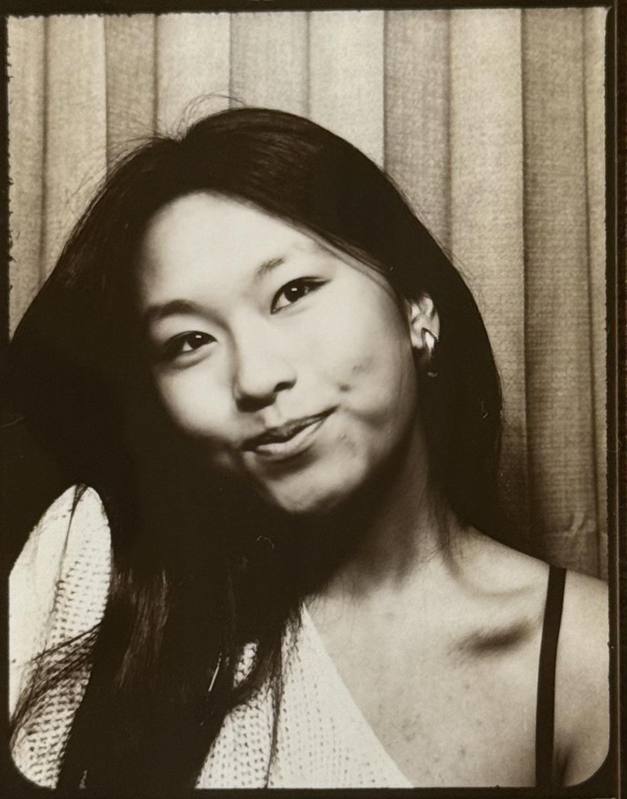

@xtinezhao
who i am
hi! my name is christine, some of my friends call me cz for short. some also know me as @xtinezhao.
i'm a sophomore from the bay area, and a recent convert to the design major! i've always enjoyed the study of the visual language. in high school, i was the youngest editor of our yearbook publication. now at stanford, i'm creative captain of on call café.
what i care about
art has always been a huge part of my life. i grew up a classical musician, practicing piano and flute for 16 years and counting. i went to countless art and ceramics classes, a hobby that has carried into my adulthood.
i am a firm believer that design can and should be used for good in this world. i care a lot about mental health in youth — we don't have to accept the increasing loneliness epidemic in this digital age.
currently, i'm looking into the creation of third-spaces, cpgs, and ui/ux design to solve these problems.
currently
reading: happy place by emily henry
listening to: —
working on: —